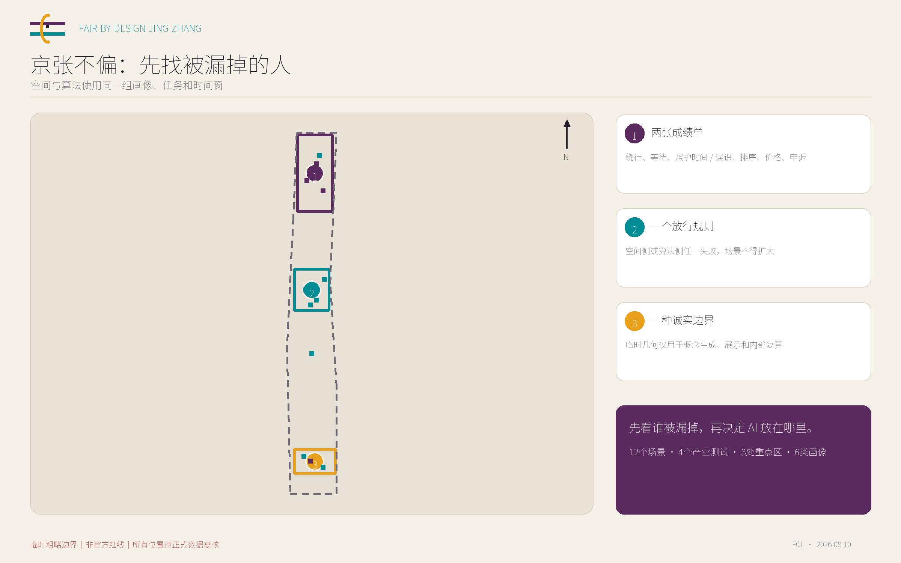
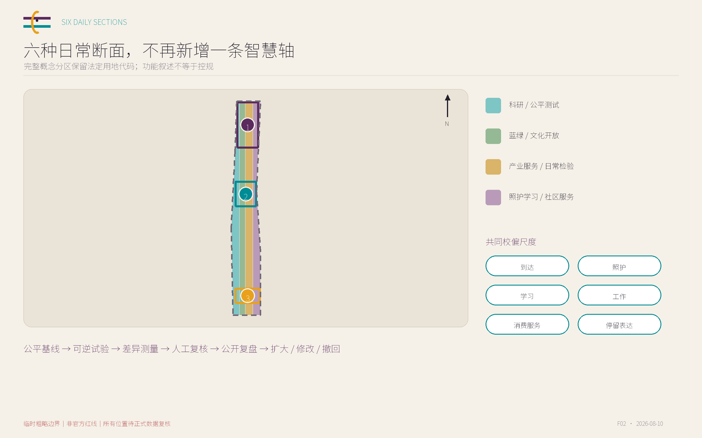
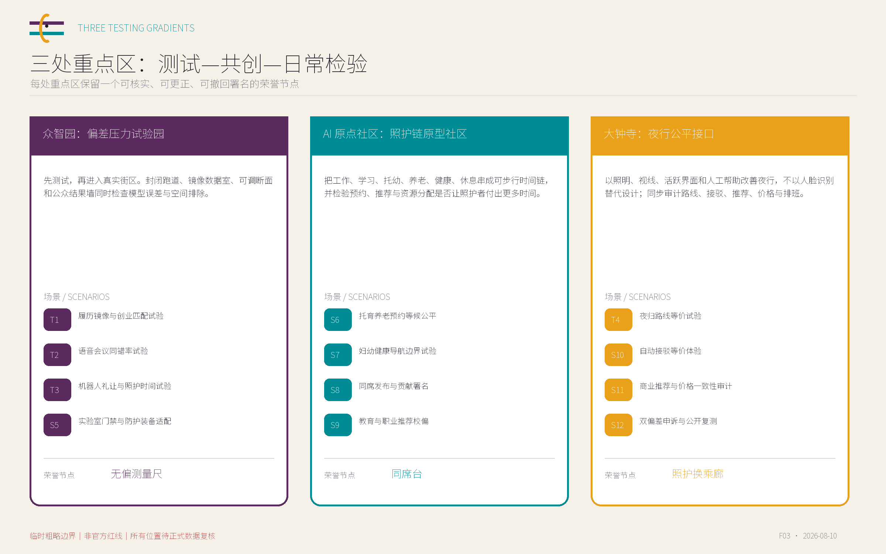
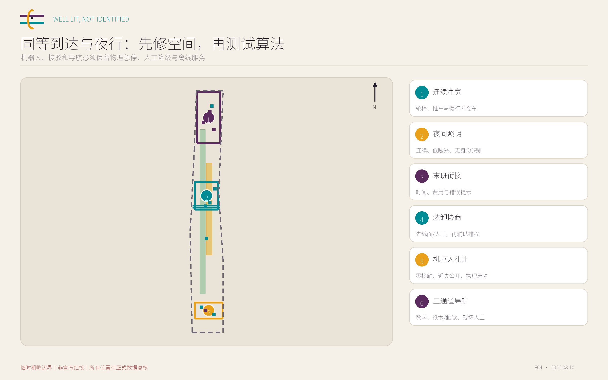
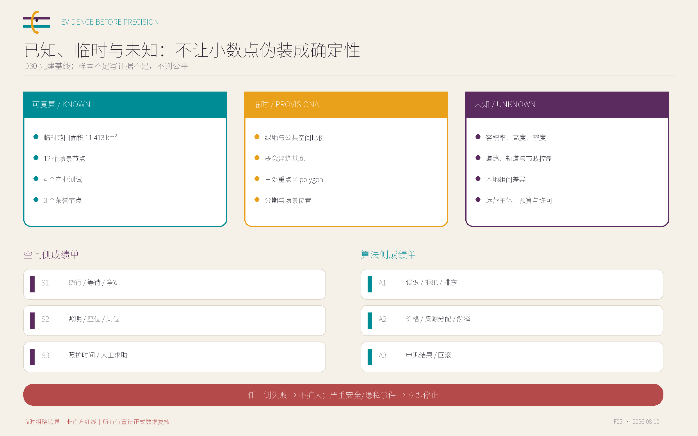

众智园：偏差压力试验园
先测试，再进入真实街区。封闭跑道、镜像数据室、可调断面和公众结果墙同时检查模型误差与空间排除。
无偏测量尺先看谁被漏掉，再决定 AI 放在哪里。
开源概念投稿｜临时粗略边界｜非规划批准或建设授权


先测试，再进入真实街区。封闭跑道、镜像数据室、可调断面和公众结果墙同时检查模型误差与空间排除。
无偏测量尺把工作、学习、托幼、养老、健康、休息串成可步行时间链，并检验预约、推荐与资源分配是否让照护者付出更多时间。
同席台以照明、视线、活跃界面和人工帮助改善夜行，不以人脸识别替代设计；同步审计路线、接驳、推荐、价格与排班。
照护换乘廊
同等面积展位、同等时段与无障碍陈述席的获得差
资格相同的镜像履历在入选率、排序、解释完整度上的组间差
不同身高与听觉需求者的设备可达率和任务完成时间差
字错率、指令完成率与纠错负担的组间差
最小净距、绕行距离、停等时间与无障碍路线等价性
识别率、礼让成功率、近失事件和人工接管率的组间差
总时长、费用、照明连续性、活跃界面、休息点和末班衔接差
路线排序、费用估计、换乘可行性与错误告警的组间差
可触达率、净宽、装备尺码覆盖和排队时间差
拒绝率、误报率和人工解锁耗时的组间差
步行距离、座位、厕位、推车停放和等候时间差
预约成功率、候补排序、提醒可达率和爽约惩罚差
私密度、可达性、转介步行时间与陪同座位
信息完整率、错误转介率和高风险问题升级率
黄金时段、可达座位、发言时长与后台准备空间差
推荐曝光、讲者排序和贡献署名遗漏率差
课程时段、安静座位、照护兼容性和无账号信息可得性
专业/职位曝光、薪酬区间和进阶课程推荐差
候车时间、登乘时间、坡板可用率与避雨座位差
派车等待、绕行、拒载和人工接管时间差
相同商品/活动的可见度、排队、座位与无障碍到达差
排序、折扣、价格展示和活动推荐的镜像画像差
申诉入口距离、等候、可达性、解决时长与修复位置公开度
申诉受理、人工复核、版本回滚和组间纠正结果差

仅用于内部一致性，非精确红线。
与临时边界绑定，非审定绿地率。
概念设计层复算，正式数据后重算。
公告17项 + agent.1-agent.6 共23项，均映射到正文、图层、指标、图纸与自检。
确定性、空间、视觉和专业四门纳入本地预检；最终状态以同一 head 的 CI 为准。

BLDG-001 是概念基底，不是现状测绘、批准规模或拆改留结论；容积率、高度、密度和退线保持 unknown。
PROV-KEY-001 · T1-T3
PROV-KEY-002 · S6-S9
PROV-KEY-003 · T4,S10-S11
三处重点区 · S12
任务依据来自官方公告与仓库任务书；外部国际案例只作方法背景，完整用途和权利状态见 sources.json。
无现场踏勘、无访谈、无真实试点；所有位置使用临时粗略几何，运营主体、预算、许可和本地组间基线均待确认。